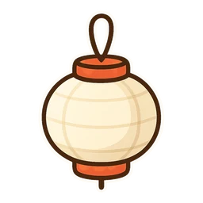
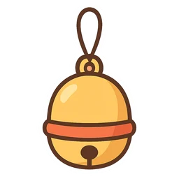
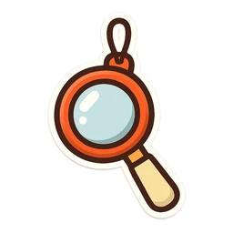
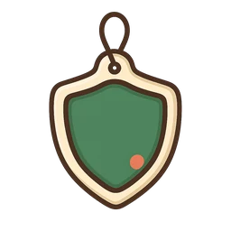
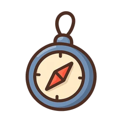
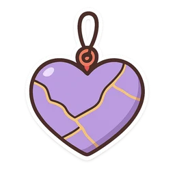
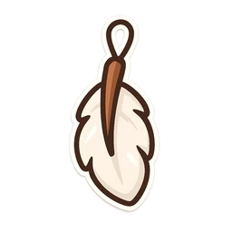
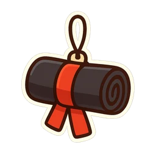

Bienestar
CulpaFu
Sentir culpa no demuestra que hayas hecho algo malo. CulpaFu te entrena para leer esa señal antes de obedecerla, reparar cuando corresponde y soltar cuando ya no hay nada que reparar.








El camino ordena todo el arte en ocho niveles. Cada nivel tiene misiones de pocos minutos y termina con un examen de cinturón: las misiones dan XP, los exámenes dan cinturón. Toca una estación del mapa para entrar en su nivel.
A tu ritmo: puedes hacer un nivel hoy y el siguiente dentro de un mes, o recorrer el camino entero en una tarde. Lo único que pide cada cinturón es su examen; cuándo presentarte lo decides tú.
Tu avance se guarda en tu cuenta y te sigue a cualquier dispositivo. Los cinturones reconocen tu progreso personal: no son certificaciones.
El mapa es público; el entrenamiento —misiones, exámenes y pergaminos— es para alumnos registrados. La cuenta es gratis y tu avance te sigue a cualquier dispositivo.